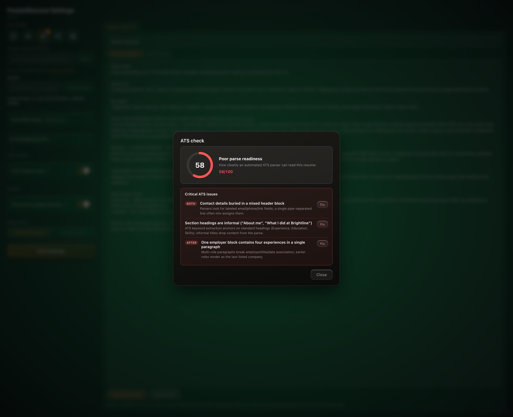

ATS Score Checker + Refine
Score how bots
read you.
Fix it. Get through.
One click scores how a real ATS parser reads your resume. Refine then restructures it into a clean master version with AI-suggested fixes — you approve before anything changes.
Score 0–100
Issues, ranked
You approve first

58 → 91